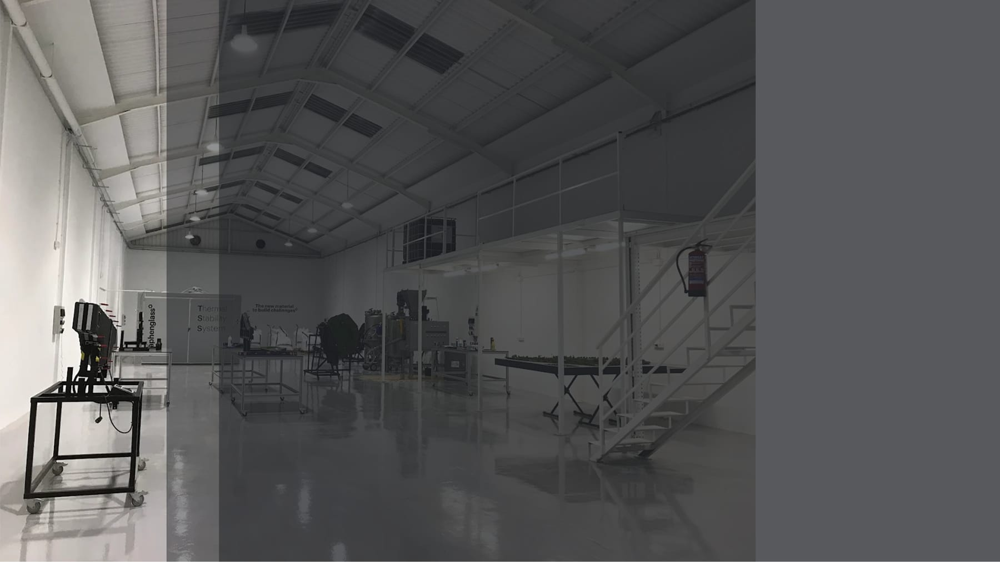

Donde otros ven límites, diseñamos materiales
Graphenglass SL — Castellón, España. Ingeniería de materiales compuestos con grafeno orientada a producción industrial.
Una plataforma industrial multiproducto de composite
Graphenglass nace de la combinación de dos mundos poco habituales juntos: el conocimiento profundo de materiales —esmaltes, cerámica, formulación— y la ingeniería de composites orientada a proceso industrial.
De ahí sale una forma concreta de trabajar: no proponemos materiales existentes para problemas nuevos, sino que diseñamos la composición, el proceso y la industrialización como una sola cosa.
Vicente Montesinos y Javier Heredia forman el equipo fundador y directivo, con amplia experiencia en la industria del esmalte, el sector cerámico y la ingeniería de composites.
Retrato del equipo fundador o planta
El desarrollo no se valida solo
Trabajamos con centros tecnológicos, universidades y grupos de investigación de referencia, y sometemos la tecnología a evaluación externa.
Centros tecnológicos
AIMPLAS (Instituto Tecnológico del Plástico) y AIDIMME, en desarrollo y caracterización de materiales.
Universidad e investigación
Universitat Jaume I (Castellón) y New Jersey Institute of Technology (NJIT), en investigación aplicada.
Evaluación e innovación
Evaluación CDTI y sello EU Seal of Excellence a proyectos de innovación de primer nivel.
Lo que respalda la tecnología
| Concepto | Detalle |
|---|---|
| Patente | US11807761 — funcionalización de grafeno en compuestos de alta cohesión interlaminar |
| Declaración ambiental | DAP — AENOR, conforme a EN 15804:2020 |
| Ecoetiquetado | EPD Verified · ECO Platform |
| Sustancias | Conforme REACH — libre de creosota, metales pesados y halógenos |
| Fin de vida | 95 % reciclable |
Trayectoria: primeras piezas de grafeno compacto
De la celosía de grafeno compacto a la aeroestructura
El proyecto arrancó desarrollando grafeno compacto para arquitectura, con las primeras aplicaciones en celosías de fachada y divisores de espacio, y materiales propios como Gg1 y GC+.
Ese trabajo inicial dio lo que hoy sostiene la compañía: dominio de la formulación, del proceso de conformado y de la industrialización de piezas composite. Sobre esa base se han construido las plataformas actuales, MultiLayer y GOHNEX, y la entrada en aplicaciones críticas.
Hablemos de tu proyecto
Nos interesan especialmente los requisitos que hoy no tienen solución con materiales estándar.